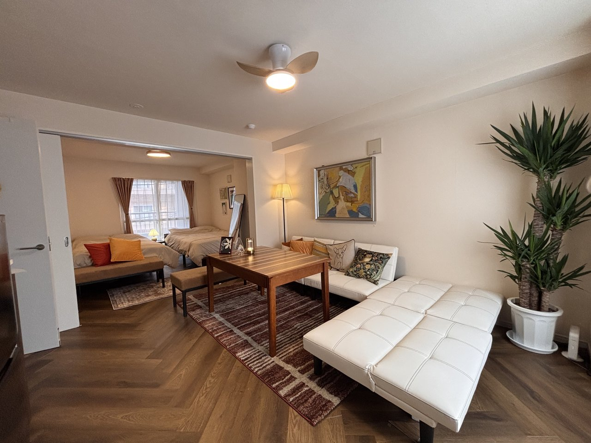

Stay Reservation
シマエナガニセコ、シマエナガ札幌の施設ページから、写真、設備、アクセス、周辺情報を確認できます。予約はBeds24への導線から進みます。
Facilities
旅の目的に合わせて、ニセコと札幌の施設ページへ進んでください。
Niseko
ニセコ・倶知安エリアで自然やスキーを楽しむ滞在に。施設紹介、写真、設備、アクセスを確認できます。

Sapporo
札幌観光や長期滞在の拠点に。2LDK貸切の写真、設備、アクセス、周辺情報を確認できます。